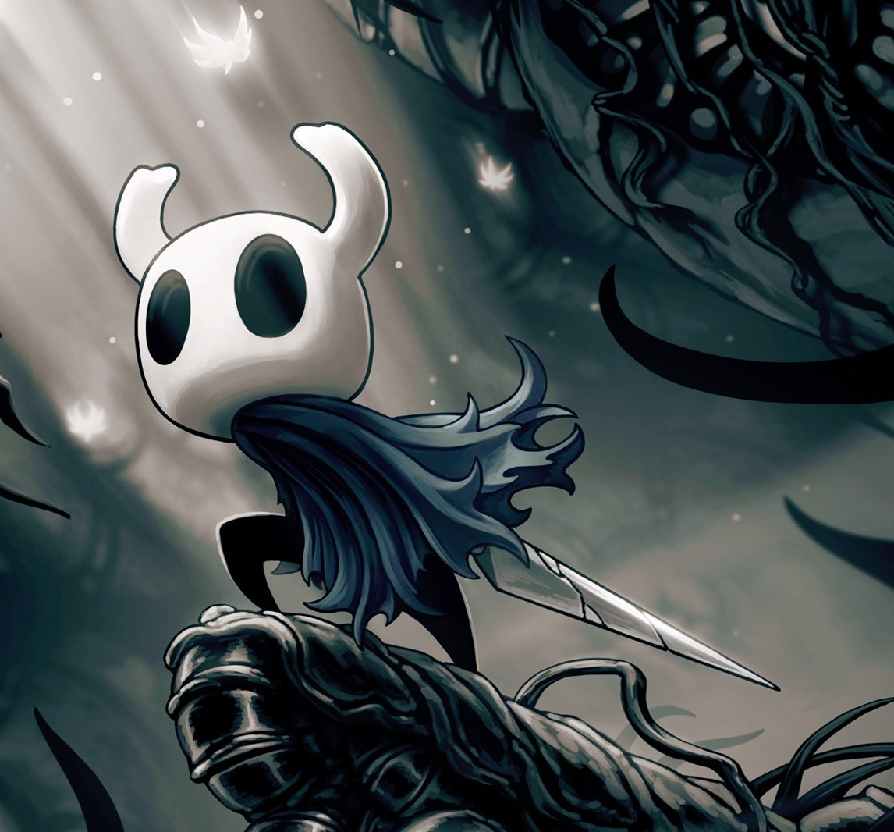
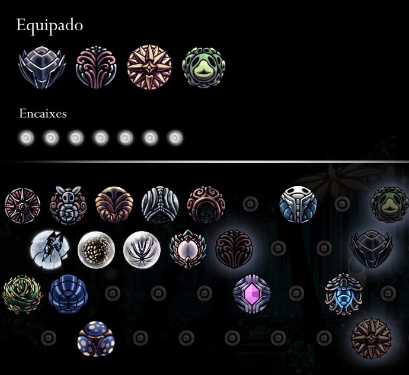
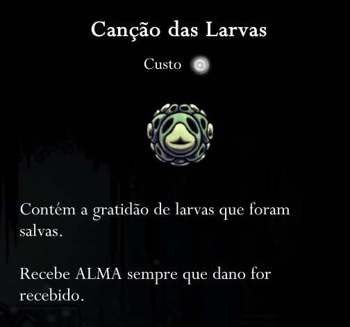
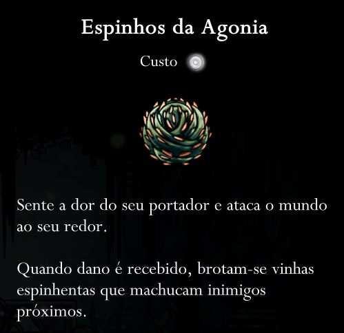
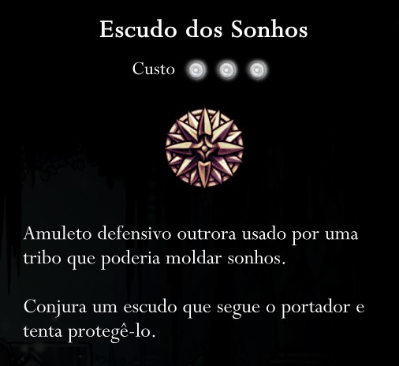
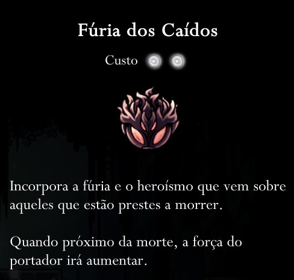
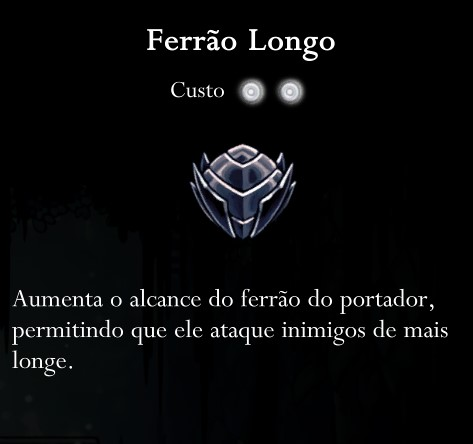
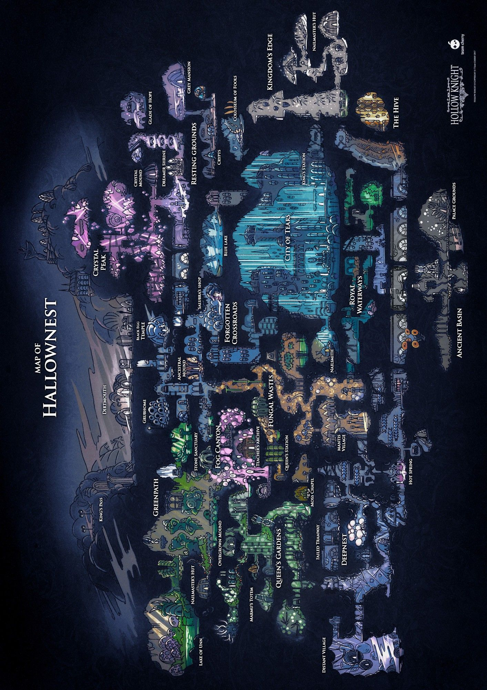
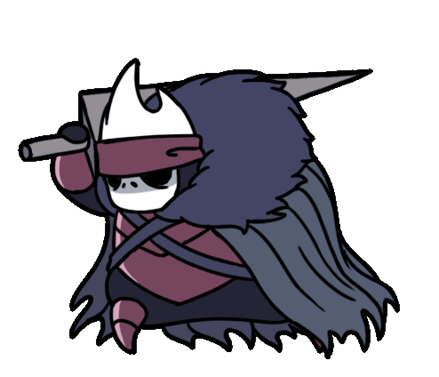

Seja bem-vindo!
O jogo escolhido para ser o tema do site foi o HOLLOW KNIGHT...
Sobre o jogo
Hollow Knight é um jogo indie de exploração e aventura do gênero metroidvania, com animação no estilo 2D.
Nesse jogo um cavaleiro sem nome explora um vasto mundo habitado por insetos, passando por cavernas, cidades antigas e ermos mortais.
Lute contra diversas criaturas malignas, alie-se a insetos bizarros e tente solucionar um antigo mistério que ronda o centro do reino.
Especificações
- Gênero: Ação, Aventura, Indie.
- Desenvolvedor: Team Cherry.
- Lançamento: 24 de fevereiro de 2017.
- Plataformas: PS4, Nintendo Switch, Xbox One, macOS, Linux, Windows.
História
O mundo de Hollow Knight é habitado por insetos que viviam em uma cidade subterrânea, até que uma contaminação enlouqueceu as criaturas. O Hollow Knight, personagem principal que carrega o nome do jogo, é um receptáculo criado para combater essa infecção. No entanto, após tantos anos e ciclos, não sobrou muito o que salvar. O mundo já está em ruínas sendo possível encontrar registros dessa civilização.
O enredo é tão profundo quanto o mapa e, caso o jogador se interesse, é possível ir atrás de cada figura importante e descobrir o que aconteceu, como o "Rei Pálido" e a "Dama Branca". Boa parte da história é contada de forma sutil ou indireta, para que o por conta própria ligue os pontos, ou melhor, teça os fios.

Amuletos
Eles são itens especiais encontrados durante a aventura, que conferem bônus ao Cavaleiro ao serem equipados no menu de encaixes.
Uma parte interessante é que seus efeitos são acumulativos e interagem entre si. O jogador pode experimentar diversas combinações e construir suas builds, mas é preciso planejar, pois cada amuleto ocupa um determinado espaço.






Encaixes
Eles são os espaços necessários para se equipar os Amuletos. Diferentes amuletos exigem uma quantidade diferente de encaixes livres. O jogador começa com 3 encaixes, e com o decorrer do jogo outros podem ser encontrados em lugares escondidos ou comprando de outros insetos.
Personagens
Mapas
Dirtmouth
É um pequeno vilarejo situado sobre a maior parte de Hallownest, encontrado no começo do jogo. É onde o jogador pode, pela primeira vez, entrar em Hallownest propriamente.
Continuando no jogo você pode passar pelo Abismo, Cidade das Lágrimas, Coliseu dos Tolos, Ninho Profundo, Encruzilhada Esquecida, Ermos Fúngicos, Caminho Verde e muitos outros.

Músicas
Battle - Hornet:
Dirtmouth:
Hallownest:
Battle - Mantis Lords:

Hollow Knight: Voidheart Edition - Announce and Gameplay Trailer | PS4
Requisitos mínimos:
- SO: Windows 7 (64bit)
- Processador: Intel Core 2 Duo E5200
- Memória: 4 GB de RAM
- Placa de vídeo: GeForce 9800GTX+ (1GB)
- DirectX: Versão 10
- Armazenamento: 9 GB
- Resolução recomendada: 1080p, 16:9